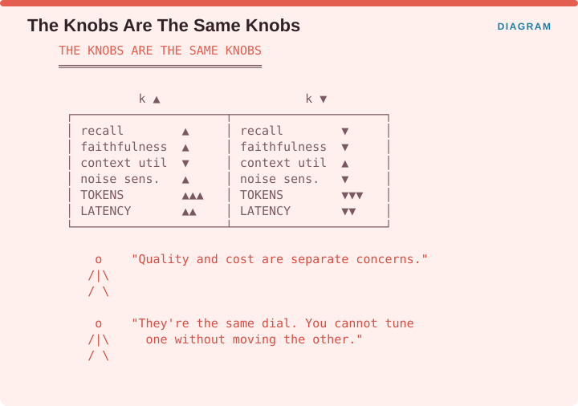
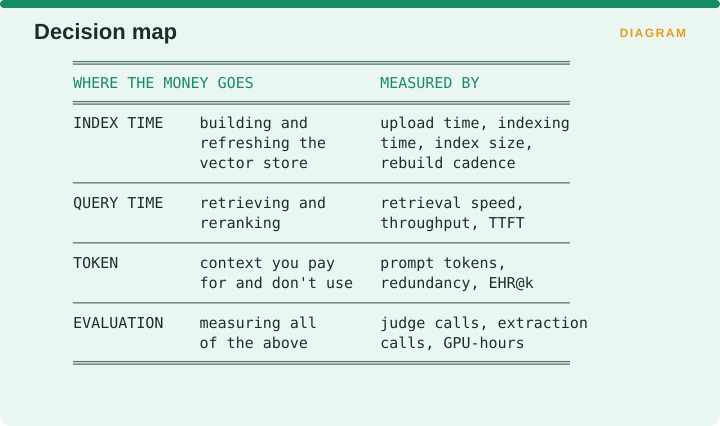

Measuring Retrieval › Efficiency and Cost
Part
Indexing, latency, token economics, and the cost of evaluation
In the source catalogue behind this book, every efficiency measure sat under a label meaning “not a real dimension”. That reflected the field accurately. For a decade, retrieval efficiency was an infrastructure concern rather than an evaluation concern: latency belonged to the operations team, quality belonged to research, and nobody owned the trade-off between the two.
RAG collapsed that separation, because in RAG the efficiency knobs are the quality knobs.

The figure shows what happens when you turn k. Raising it pushes recall up, faithfulness up, context utilization down, noise sensitivity up, tokens up sharply and latency up. Lowering it moves every one of those in the opposite direction. There is no setting of k that is good for quality and separately a setting that is good for cost, because it is one dial.
So a team treating quality and cost as separate concerns is treating one dial as two, and cannot tune either without moving the other.
Gan et al.’s survey confirms the field has caught up, treating computational efficiency as an axis equal to performance, factual accuracy and safety.

Index time covers building and refreshing the vector store, measured by upload time, indexing time, index size and how often you can afford to rebuild. Query time covers retrieval and reranking, measured by retrieval speed, throughput and time-to-first-token. Token cost covers the context you pay for and do not use, measured by prompt tokens, redundancy and Exclusive Hit Rate. Evaluation cost covers measuring all of the above, measured in judge calls, extraction calls and GPU hours.
The fourth is the one teams discover by receiving an invoice.
Measuring Retrieval · Madhava Gaikwad · First edition, September 2026